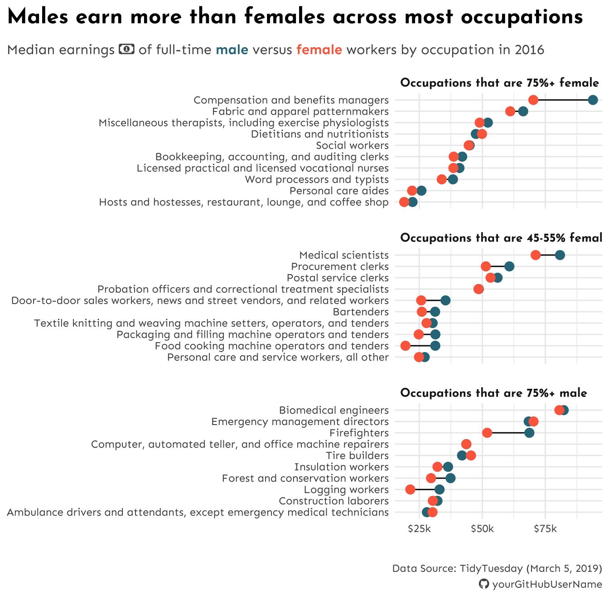

##~~~~~~~~~~~~~~~~~~~~~~~~~~~~~~~~~~~~~~~~~~~~~~~~~~~~~~~~~~~~~~~~~~~~~~~~~~~~~~## setup ----##~~~~~~~~~~~~~~~~~~~~~~~~~~~~~~~~~~~~~~~~~~~~~~~~~~~~~~~~~~~~~~~~~~~~~~~~~~~~~~#..........................load packages.........................library(tidyverse)library(showtext)#......................import Google fonts.......................# `name` is the name of the font as it appears in Google Fonts# `family` is the user-specified id that you'll use to apply a font in your ggpplotfont_add_google(name ="Josefin Sans", family ="josefin")font_add_google(name ="Sen", family ="sen")#....................import Font Awesome fonts...................font_add(family ="fa-brands",regular = here::here("fonts", "Font Awesome 6 Brands-Regular-400.otf"))font_add(family ="fa-regular",regular = here::here("fonts", "Font Awesome 6 Free-Regular-400.otf")) font_add(family ="fa-solid",regular = here::here("fonts", "Font Awesome 6 Free-Solid-900.otf"))#................enable {showtext} for rendering.................showtext_auto()1showtext_opts(dpi =300)#..........................import data...........................jobs <-read_csv("https://raw.githubusercontent.com/rfordatascience/tidytuesday/master/data/2019/2019-03-05/jobs_gender.csv")
1
You’ll want {showtext}’s rendering parameters to match those of ggsave(). Set both to a DPI of 300 (often used as a standard for quality print images).
Wrangle data
##~~~~~~~~~~~~~~~~~~~~~~~~~~~~~~~~~~~~~~~~~~~~~~~~~~~~~~~~~~~~~~~~~~~~~~~~~~~~~~## wrangle data ----##~~~~~~~~~~~~~~~~~~~~~~~~~~~~~~~~~~~~~~~~~~~~~~~~~~~~~~~~~~~~~~~~~~~~~~~~~~~~~~jobs_clean <- jobs |># add col with % men in a given occupation (% females in a given occupation was already included) ----mutate(percent_male =100- percent_female) |># rearrange columns ----relocate(year, major_category, minor_category, occupation, total_workers, workers_male, workers_female, percent_male, percent_female, total_earnings, total_earnings_male, total_earnings_female, wage_percent_of_male) |># drop rows with missing earning data ----drop_na(total_earnings_male, total_earnings_female) |># make occupation a factor (necessary for reordering groups in our plot) ----mutate(occupation =as.factor(occupation)) |># classify jobs by percentage male or female (these will become facet labels in our plot) ----mutate(group_label =case_when( percent_female >=75~"Occupations that are 75%+ female", percent_female >=45& percent_female <=55~"Occupations that are 45-55% female", percent_male >=75~"Occupations that are 75%+ male" ))##~~~~~~~~~~~~~~~~~~~~~~~~~~~~~~~~~~~~~~~~~~~~~~~~~~~~~~~~~~~~~~~~~~~~~~~~~~~~~~## create subset df ----##~~~~~~~~~~~~~~~~~~~~~~~~~~~~~~~~~~~~~~~~~~~~~~~~~~~~~~~~~~~~~~~~~~~~~~~~~~~~~~#....guarantee the same random samples each time we run code.....set.seed(0)#...............get random samples from each group...............# 10 random jobs that are 75%+ female (2016) ----f75 <- jobs_clean |>filter(year ==2016, group_label =="Occupations that are 75%+ female") |>slice_sample(n =10)# 10 random jobs that are 75%+ male (2016) ----m75 <- jobs_clean |>filter(year ==2016, group_label =="Occupations that are 75%+ male") |>slice_sample(n =10)# 10 random jobs that are 45-55%+ female (2016) ----f50 <- jobs_clean |>filter(year ==2016, group_label =="Occupations that are 45-55% female") |>slice_sample(n =10)#.......combine dfs & relevel factors (for plotting order).......subset_jobs <-rbind(f75, m75, f50) |>mutate(group_label =fct_relevel(group_label, "Occupations that are 75%+ female","Occupations that are 45-55% female", "Occupations that are 75%+ male"))
# create a named color palette ----earnings_pal <-c("males"="#2D7787","females"="#FC6B4B","dark_text"="#0C1509","light_text"="#4E514D") # preview it -----monochromeR::view_palette(earnings_pal)
#.........................create caption.........................github_icon <-""github_username <-"yourGitHubUserName"caption <- glue::glue("Data Source: TidyTuesday (March 5, 2019)<br> <span style='font-family:fa-brands;'>{github_icon};</span> {github_username}")#........................create subtitle.........................money_icon <-""subtitle <- glue::glue("Median earnings <span style='font-family:fa-regular;'>{money_icon};</span> of full-time <span style='color:#2D7787;'>**male**</span> versus <span style='color:#FC6B4B;'>**female**</span> workers by occupation in 2016")#..........................modify plot...........................updated_plot <- plot +labs(title ="Males earn more than females across most occupations",subtitle = subtitle,caption = caption) +theme_minimal() +theme(plot.title.position ="plot",plot.title =element_text(family ="josefin",face ="bold",size =18),plot.subtitle = ggtext::element_textbox(family ="sen",size =11.5,color = earnings_pal["light_text"],1#fill = "lightblue", # for debuggingwidth =unit(25, "cm"),margin =margin(t =2, r =0, b =6, l =0),padding =margin(t =5, r =0, b =5, l =0)),plot.caption = ggtext::element_textbox(family ="sen",face ="italic", # NOTE: this no longer applies since the typeface "sen" does not exist in an italic font stylecolor = earnings_pal["light_text"],#fill = "lightblue", # for debugging halign =1, lineheight =1.5,width =unit(25, "cm"),margin =margin(t =15, r =0, b =0, l =0),padding =margin(t =10, r =0, b =10, l =0)),strip.text.x =element_text(family ="josefin",face ="bold",size =10,hjust =0),panel.spacing.y =unit(0.5, "cm"),axis.text =element_text(family ="sen",size =9,color = earnings_pal["light_text"]),axis.title =element_blank() )updated_plot
1
Adding fill color to ggtext::element_textbox()s can help to identify if the size is as intended once saved using ggsave()

Reminder: build your viz for your desired output!
Notice that making these modifications means we get a plot that doesn’t render as nicely in our Quarto doc (e.g. y-axis text feels a bit more crowded, some of the panel strip text gets cut off). This is a good reminder that your final desired output format will influence how you build / modify your plot!